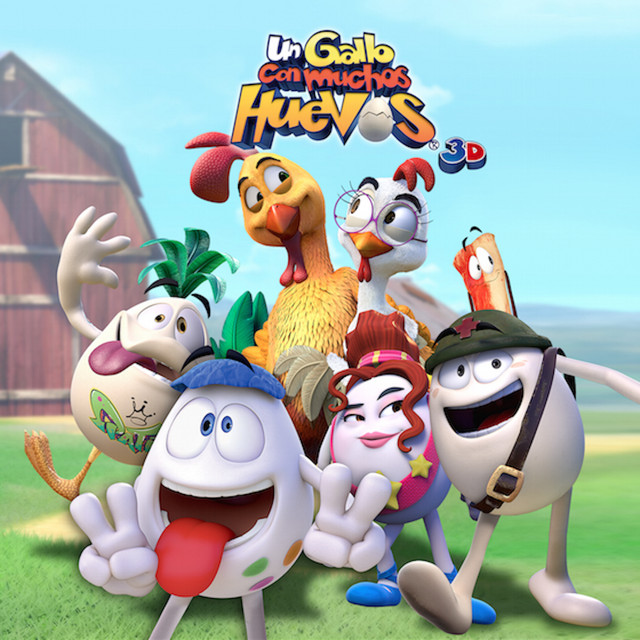
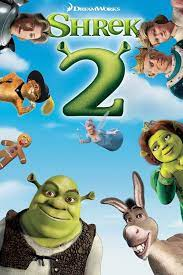
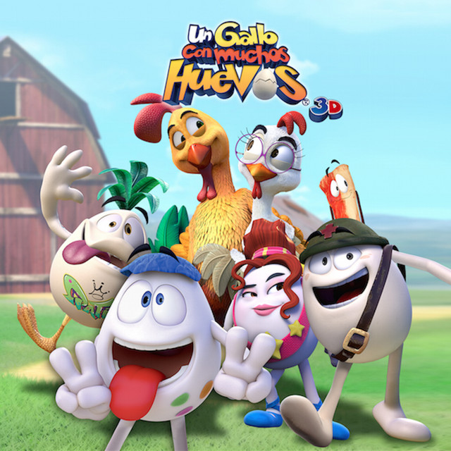
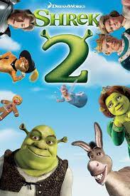

2.Paul
3.Scary movie

4.Un gallo con muchos huevos

5.Son como niños 2
6.Shrek 2

Bienvenid@ a mi pagina web, aqui puedes encontrar todo lo relacionado con el mundo del entretenimiento desde cuales fueron las peliculas ganadoras del oscar hasta cuales son las nuevas series o peliculas de marvel.
Aqui te dejo algunas recomendaciones de las mejores peliculas de comedia:
1.Son como niños
2.Paul
3.Scary movie
4.Un gallo con muchos huevos

5.Son como niños 2
6.Shrek 2

Si quieres ver cuales son las mejores 10 peliculas de comedia da clic aqui